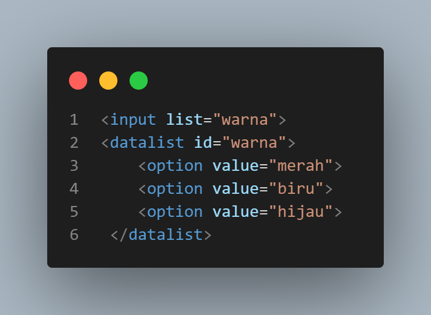
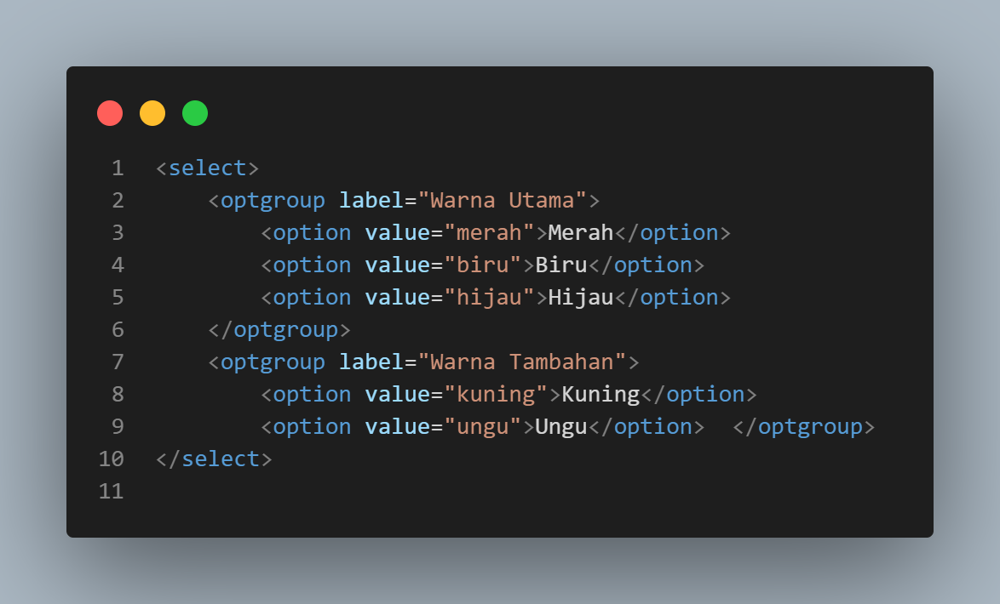

Tag Syntax Option
-
<select> Element:

Dalam elemen <select>, tag <option> digunakan untuk membuat pilihan dalam bentuk dropdown atau daftar yang dapat dipilih oleh pengguna. Pengguna dapat memilih satu atau lebih opsi dari daftar pilihan yang diberikan.
-
<datalist> Element:
Dalam elemen <datalist>, tag <option> digunakan untuk membuat daftar opsi yang dapat digunakan oleh elemen input <input> dengan atribut list.
-
<optgroup> Element:
Dalam elemen <optgroup>, tag <option> digunakan untuk mengelompokkan beberapa opsi bersama-sama dalam satu grup atau kategori tertentu. Ini berguna untuk membuat daftar yang lebih terstruktur.